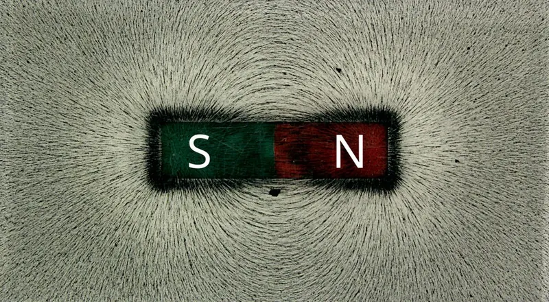
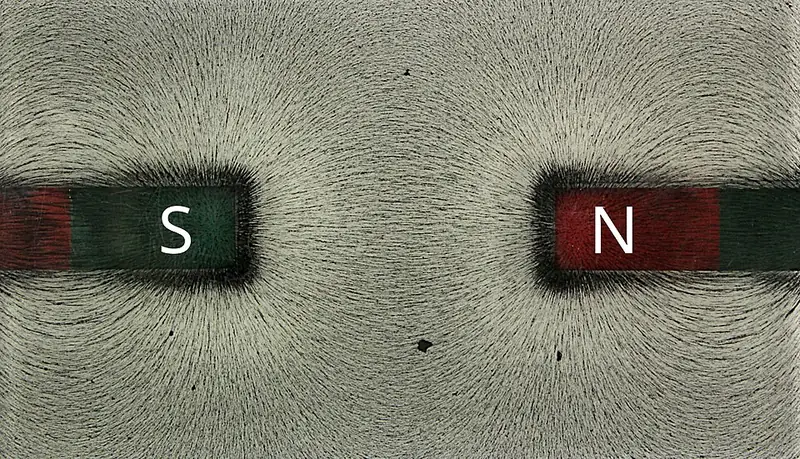

Cambridge Lower Secondary · Science 0893 · Stage 8 · Physics
Magnetic Fields and Electromagnets
What a magnetic field is and how to draw it, how magnetic fields push and pull on each other, and how to make, use and investigate the strength of an electromagnet.
British & IGCSE › Checkpoint 8 › Checkpoint 8 Science — Complete Course
- Describe a magnetic field: the region around a magnet where it exerts a force, and understand that a magnet's field exerts a force on other magnetic fields (so magnets attract or repel). (8Pe.01)
- Describe how to make an electromagnet, and know that electromagnets have many uses. (8Pe.02)
- Investigate the factors that change the strength of an electromagnet: number of turns, current and core. (8Pe.03)
- Thinking and Working Scientifically used on this page: planning an investigation with variables (8TWSp.04), risk assessment (8TWSp.05), repeat readings (8TWSc.03), anomalous results and trends (8TWSa.02), drawing graphs and conclusions (8TWSa.03, 8TWSa.05).
1. Key words
| Word / phrase | Meaning / use |
|---|---|
| magnetic material | مادة مغناطيسية — a material attracted by a magnet: iron, steel, nickel and cobalt |
| pole | قطب — an end of a magnet where the force is strongest: north (N) or south (S) |
| magnetic field | المجال المغناطيسي — the region around a magnet where it exerts a force on magnetic materials and other magnets |
| field line | خط المجال — a line showing the direction of the magnetic field; drawn from N to S |
| plotting compass | بوصلة صغيرة — a small compass used to find the direction of a magnetic field |
| electromagnet | مغناطيس كهربائي — a coil of wire that becomes a magnet when an electric current flows through it |
| coil | ملف — wire wound round and round in many turns |
| core | القلب — the material inside the coil, usually iron |
| current | التيار الكهربائي — the flow of electric charge round a circuit, measured in amperes (A) |
| permanent magnet | مغناطيس دائم — a magnet that keeps its magnetism all the time, e.g. a steel bar magnet |
2. Magnets — a quick reminder
- Every magnet has a north pole (N) and a south pole (S). The forces are strongest at the poles.
- Like poles repel (N–N or S–S push apart). Unlike poles attract (N–S pull together).
- Magnets attract magnetic materials: iron, steel, nickel and cobalt. Most metals (copper, aluminium, gold) are not magnetic.
- Only a magnet can repel another magnet — so repulsion is the true test of whether an object is a magnet. A piece of iron is attracted by both poles.
3. What is a magnetic field?
A magnetic field is the region around a magnet where it exerts a force on magnetic materials and on other magnets. You cannot see a magnetic field, but you can show its shape with iron filings or with plotting compasses. We draw it with magnetic field lines.
- Field lines go from the north pole to the south pole (outside the magnet). The arrow shows the direction a plotting compass's north end would point.
- The field is strongest where the lines are closest together — at the poles.
- Field lines never cross each other.
- The field surrounds the magnet in all directions (in three dimensions, not just on the paper).
Plotting the field with a compass:
- Put the bar magnet in the middle of a sheet of paper and draw round it. Label N and S.
- Place a small plotting compass near the north pole. Mark a dot at each end of the compass needle.
- Move the compass so that its tail is on the dot you just made at its head. Mark a new dot at the head.
- Repeat until you reach the south pole (or the edge of the paper). Join the dots with a smooth curve and add an arrow pointing away from N.
- Start again at a different point near the north pole to draw more field lines.
Iron filings are quicker: place paper over the magnet, sprinkle filings and tap gently. The filings line up along the field lines and crowd together at the poles. But filings do not show the direction of the field — a compass does.

4. Fields acting on other fields
A magnetic field exerts a force on other magnetic fields. When two magnets come close, their fields overlap and combine. This is why magnets attract or repel, even without touching.

The same idea explains why a compass works: the compass needle is a tiny magnet, and the Earth's magnetic field exerts a force on its field and turns it to point north. (You will study the Earth's field in another lesson.)
5. Electromagnets
When an electric current flows through a wire, it makes a magnetic field around the wire. The field of a straight wire is weak, but if the wire is wound into a coil, the fields of all the turns add together. Putting an iron core inside the coil makes the field much stronger. This is an electromagnet.
How to make an electromagnet:
- Take a length of insulated copper wire (the plastic coating stops the current taking a short cut between the turns).
- Wind it tightly round an iron nail (the core) many times, always in the same direction.
- Connect the two ends of the wire to a cell (or low-voltage power supply) and a switch.
- Close the switch: current flows, and the nail becomes a magnet that can pick up paper clips.
- Open the switch: the current stops, the magnetism disappears and the paper clips drop.
The field of an electromagnet has the same shape as a bar magnet's field, with a N pole at one end of the coil and a S pole at the other. Reversing the current (turning the cell round) swaps the poles.
| Permanent (bar) magnet | Electromagnet | |
|---|---|---|
| Can it be switched off? | no | yes — switch off the current |
| Can its strength be changed? | no | yes — change the current or the number of turns |
| Can its poles be swapped? | no | yes — reverse the current |
| Needs electricity? | no | yes |
Why iron and not steel for the core? Iron becomes strongly magnetised while the current flows and loses its magnetism as soon as the current stops. Steel would stay magnetised (it would become a permanent magnet), so the electromagnet could not be switched off properly.
6. Uses of electromagnets
Electromagnets are used wherever we need a magnet that can be switched on and off or controlled:
| Use | How the electromagnet helps |
|---|---|
| scrapyard crane | lifts heavy iron and steel scrap (such as old cars), then drops it when the current is switched off |
| recycling plant | separates steel cans (magnetic) from aluminium cans (not magnetic) |
| electric door lock | holds a door shut while the current flows; releases it when a card is accepted or the power is switched off |
| electric bell | the electromagnet pulls an iron arm that hits the bell, switching itself on and off rapidly |
| relay | a small current in an electromagnet switches on a separate circuit with a large current, e.g. a car's starter motor |
| loudspeaker | an electromagnet in the speaker is pushed and pulled by a permanent magnet, making the cone vibrate to make sound |
| MRI scanner in hospitals | very strong electromagnets are used to make images of the inside of the body |
| maglev train | electromagnets lift the train above the track and push it along, so there is no friction with the rails |
- المجال المغناطيسي = المنطقة حوالين المغناطيس اللي بيأثر فيها بقوة. خطوطه بتطلع من الشمال (N) وتدخل في الجنوب (S)، وأقوى مكان عند الأقطاب لأن الخطوط متقاربة.
- المغناطيس الكهربائي = سلك معزول ملفوف لفّات كتير حوالين قلب حديد ومتوصل ببطارية. لما التيار يمشي يبقى مغناطيس، ولما يقف يبطل.
- عشان تقوّيه: زوّد عدد اللفات، أو زوّد التيار، أو استخدم قلب حديد.
7. Factors that change the strength of an electromagnet
| Factor | Change that makes it stronger | Why (simple idea) |
|---|---|---|
| number of turns on the coil | more turns | each turn adds its own magnetic field |
| size of the current | bigger current (e.g. more cells in series / higher voltage) | a bigger current makes a stronger field around every turn |
| the core | an iron core (much stronger than no core / air, or a non-magnetic core such as wood, plastic, copper or aluminium) | the iron becomes magnetised and adds its own strong field |
Measuring strength. The usual method is to count how many identical paper clips the electromagnet can pick up (or how long a chain it holds). Other methods: measure the mass of iron filings it lifts, or the distance from which it attracts a paper clip.
8. Planning the investigation
Question: How does the number of turns on the coil affect the strength of an electromagnet?
| Type of variable | In this investigation |
|---|---|
| independent (what you change) | number of turns: 10, 20, 30, 40, 50 |
| dependent (what you measure) | number of paper clips picked up |
| control (what you keep the same) | the current (same cell / same power-supply setting), the same iron nail (core), the same type and size of paper clips, the same wire, the same way of lowering the nail onto the clips |
Prediction (using scientific knowledge): the more turns, the more paper clips will be picked up, because each turn adds to the magnetic field.
Method: wind 10 turns, switch on, lower the nail into a pile of clips, lift it, count the clips, switch off. Repeat three times and calculate a mean. Then wind more turns and repeat.
Risk assessment: the wire can get hot when the current flows, especially with a short wire and a large current. Control the risk: use a low-voltage supply or a single cell, switch off between readings and do not hold the coil while it is switched on. Never connect a bare wire straight across a cell (short circuit).
Reliability: repeat each reading at least three times. If the repeats are close together, the results are reliable. If one repeat is very different (anomalous), check it and leave it out of the mean.
Accuracy and precision: counting paper clips only gives whole numbers, so small changes in strength may not be noticed. A more precise method is to measure the force needed to pull a piece of iron off the electromagnet with a newton meter, or to weigh the iron filings it lifts.
Presenting results: number of turns is a continuous number variable, so plot a line graph with the number of turns on the x-axis and the number of clips on the y-axis. (If the independent variable were the type of core — iron, steel, wood — you would use a bar chart, because it is a category.)
| Number of turns | 10 | 20 | 30 | 40 | 50 |
|---|---|---|---|---|---|
| Mean number of paper clips | 3 | 7 | 10 | 14 | 17 |
Conclusion: as the number of turns increases, the number of paper clips picked up increases — the electromagnet gets stronger. The points lie close to a straight line, so doubling the number of turns roughly doubles the number of clips. Limitation: the conclusion is only true for the range tested (10 to 50 turns) with this current and this core.
9. Worked examples
Worked example 1 — Describe what is meant by a magnetic field. [1] Describe how a plotting compass can be used to show the direction of the field around a bar magnet. [2]
- A magnetic field is the region around a magnet where a magnetic material or another magnet feels a force (1).
- Place the compass near the magnet and mark where the needle points; move the compass along in that direction, marking dots, and join them (1).
- The compass needle's north end points in the direction of the field — away from N and towards S (1).
Worked example 2 — Two bar magnets are placed end to end. The field lines between them go straight across the gap from one magnet to the other. Do the magnets attract or repel? Explain. [2]
- They attract (1).
- Field lines going straight across the gap show a north pole facing a south pole; unlike poles attract (1).
- Common mistake: thinking lines across the gap mean the fields are fighting. When like poles face each other, the lines bend away and there is a neutral point with no field.
Worked example 3 — A scrapyard uses an electromagnet on a crane, not a permanent magnet. Give two reasons. [2]
- The electromagnet can be switched off, so the crane can drop the scrap where it is needed (1).
- Its strength can be changed (by changing the current) to suit the load (1).
Worked example 4 — Aya wants to find out whether the size of the current affects the strength of an electromagnet. Name the independent variable, the dependent variable and two control variables. [3]
- Independent variable: the current (1).
- Dependent variable: the number of paper clips picked up (or another measure of strength) (1).
- Control variables, any two: number of turns, the core (same nail), size/type of paper clips, the wire (1).
Worked example 5 — Use the graph in section 8. (a) Estimate how many paper clips 25 turns would pick up. [1] (b) A student says "the line shows that 100 turns would pick up about 35 clips". Comment on this claim. [1]
- (a) Read up from 25 turns to the line, then across: about 8 or 9 clips (accept 8–9).
- (b) 100 turns is far outside the range tested (10–50). We cannot be sure the pattern continues — for example, the core might not keep getting stronger at the same rate — so this prediction may not be accurate; it should be tested.
Worked example 6 — Explain why an electromagnet used in a door lock has a core made of iron and not steel. [2]
- Iron loses its magnetism when the current is switched off (1).
- Steel would stay magnetised, so the lock would not release when the current stops (1).
- Drawing field lines from S to N, or with no arrows. Outside the magnet they go N → S.
- Drawing field lines that cross or that do not touch the poles.
- Saying a magnetic field is "the magnet's force" without saying it is the region around the magnet.
- Saying "more electricity" or "more power". Say more current (or more cells / a higher voltage).
- Saying "use a bigger nail" as the main factor. The three factors to learn are number of turns, current and core material.
- Forgetting that the wire must be insulated.
- In investigations: changing two variables at once (e.g. more turns and more cells) — then you cannot tell which one caused the change.
- Choosing a bar chart for continuous data such as number of turns or current. Use a line graph.
- Draw or complete field lines around a bar magnet, with arrows; or plot the field from compass positions.
- Mark where the field is strongest (where lines are closest, at the poles).
- Predict whether two magnets attract or repel from their poles or field patterns.
- Label a diagram of an electromagnet (coil, core, cell, switch) and describe how to make one.
- Name factors that make an electromagnet stronger; identify variables in an investigation; suggest a risk and how to control it.
- Interpret results: find an anomalous result, describe the trend, draw or read a line graph, make a prediction within the range, and say why a prediction outside the range may not be reliable.
- Give a use of an electromagnet and explain why an electromagnet is better than a permanent magnet for that job.
Practice
- A magnetic field is the region around a magnet where it exerts a force on magnetic materials and other magnets.
- Field lines go N → S outside the magnet, never cross, and are closest (field strongest) at the poles.
- Magnetic fields exert forces on each other: unlike poles attract, like poles repel.
- Electromagnet = coil of insulated wire round an iron core, with a current flowing. Switch off → no magnetism.
- Stronger electromagnet: more turns, bigger current, iron core.
- Uses: scrapyard cranes, recycling, door locks, bells, relays, loudspeakers, MRI scanners, maglev trains.
All pages in this course
Start here
- Stage 8 Science: The Tests and How to Prepare
- Thinking and Working Scientifically: Models, Investigations and Analysing Results
Biology
- Joints and Antagonistic Muscles
- Blood and Its Components
- Breathing, Gas Exchange and Diffusion in the Lungs
- A Balanced Diet, Energy Stores and Lifestyle
- Aerobic Respiration
- Ecosystems, Bioaccumulation and Invasive Species
Chemistry
- The Structure of the Atom
- Purity, Concentration and Chromatography
- Word Equations, Exothermic and Endothermic Reactions
- The Reactivity of Metals
- Impure Products and Solubility of Salts
Physics
- Speed and Distance–Time Graphs
- Balanced and Unbalanced Forces, and Moments
- Pressure, Particles and Diffusion
- Reflection and Refraction
- Dispersion and Colour
- Magnetic Fields and Electromagnets
Earth and space
- The Earth's Magnetic Field and Earth's Resources
- Climate, Weather and Climate Change
- Galaxies and Asteroids
Practice tests